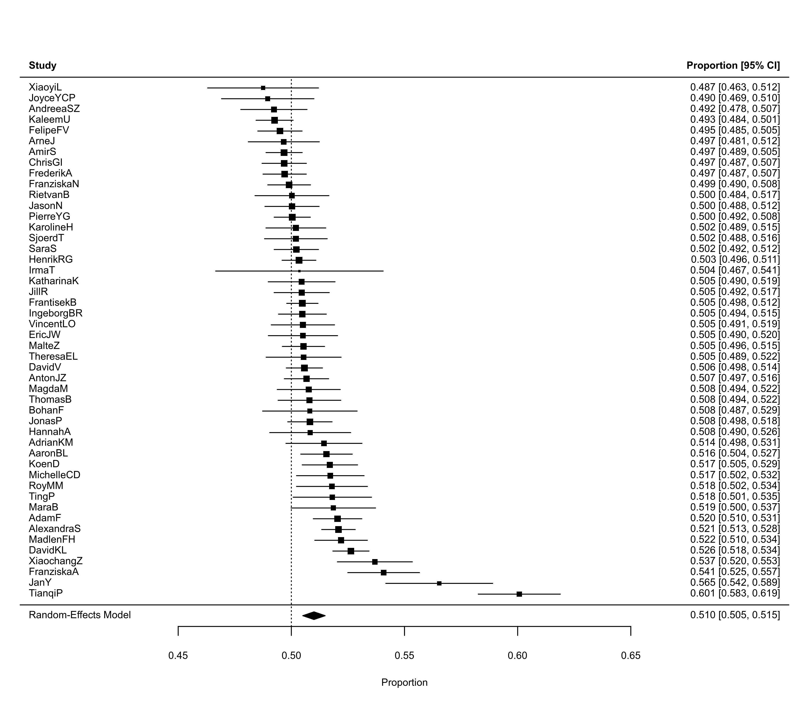
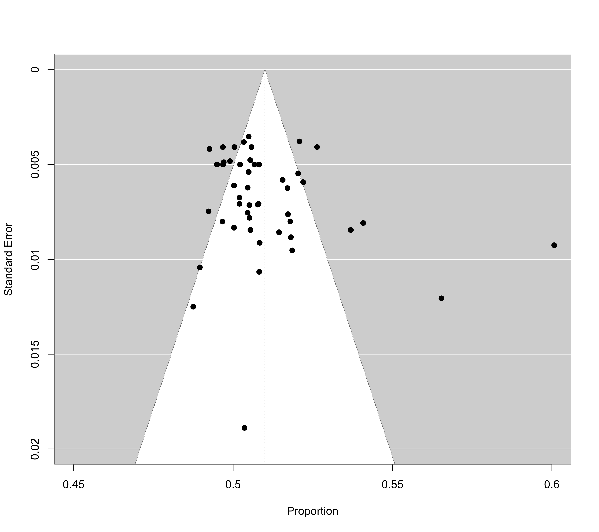

Results of 350,757 Coin Flips to Examine Same-Side Bias
dat.bartos2023.RdResults from 350,757 coin flips by 48 people to examine the presence of same-side bias.
dat.bartos2023Format
The data frame contains the following columns:
| person | character | person identifier |
| hsame | numeric | number of flips where the coin landed on heads and on the same side as where it started |
| hdiff | numeric | number of flips where the coin landed on heads and on the different side as where it started |
| tsame | numeric | number of flips where the coin landed on tails and on the same side as where it started |
| tdiff | numeric | number of flips where the coin landed on tails and on the different side as where it started |
| same | numeric | number of flips where the coin landed on the same side as where it started |
| flips | numeric | total number of flips |
Details
In a landmark study by Bartoš et al. (2023), 48 people flipped a coin (of various currencies and/or denominations) a total of 350,757 times, recording on each flip whether it landed on heads or tails and whether the coin landed on the same side as where it started or on the different side. The goal of this experiment was to examine the model by Diaconis, Holmes, and Montgomery (2007), according to which flipped coins have a slightly higher than 50% chance (of around 51% according to the D-H-M model) of landing on the same side as where they started.
Source
Bartoš, F., Sarafoglou, A., Godmann, H. R., Sahrani, A., Leunk, D. K., Gui, P. Y., Voss, D., Ullah, K., Zoubek, M. J., Nippold, F., Aust, F., Vieira, F. F., Islam, C.-G., Zoubek, A. J., Shabani, S., Petter, J., Roos, I. B., Finnemann, A., Lob, A. B., Hoffstadt, M. F., Nak, J., de Ron, J., Derks, K., Huth, K., Terpstra, S., Bastelica, T., Matetovici, M., Ott, V. L., Zetea, A. S., Karnbach, K., Donzallaz, M. C., John, A., Moore, R. M., Assion, F., van Bork, R., Leidinger, T. E., Zhao, X., Motaghi, A. K., Pan, T., Armstrong, H., Peng, T., Bialas, M., Pang, J. Y.-C., Fu, B., Yang, S., Lin, X., Sleiffer, D., Bognar, M., Aczel, B., & Wagenmakers, E.-J. (2023). Fair coins tend to land on the same side they started: Evidence from 350,757 flips. arXiv, 2310.04153, v2. https://arxiv.org/abs/2310.04153
References
Diaconis, P., Holmes, S., & Montgomery, R. (2007). Dynamical bias in the coin toss. SIAM Review, 49(2), 211–235. https://doi.org/10.1137/s0036144504446436
Concepts
physics, human factors, proportions, multivariate models
Examples
### copy data into 'dat' and examine data
dat <- dat.bartos2023
dat
#> person hsame hdiff tsame tdiff same flips
#> 1 XiaoyiL 375 406 405 414 780 1600
#> 2 JoyceYCP 588 586 538 588 1126 2300
#> 3 AndreeaSZ 1129 1134 1075 1139 2204 4477
#> 4 KaleemU 3506 3642 3550 3626 7056 14324
#> 5 FelipeFV 2502 2531 2455 2527 4957 10015
#> 6 ArneJ 995 982 942 981 1937 3900
#> 7 AmirS 3756 3775 3702 3779 7458 15012
#> 8 ChrisGI 2546 2519 2425 2515 4971 10005
#> 9 FrederikA 2564 2638 2655 2643 5219 10500
#> 10 FranziskaN 2634 2718 2734 2671 5368 10757
#> 11 RietvanB 876 899 925 900 1801 3600
#> 12 JasonN 1692 1676 1660 1672 3352 6700
#> 13 PierreYG 3825 3745 3681 3749 7506 15000
#> 14 KarolineH 1370 1369 1391 1370 2761 5500
#> 15 SjoerdT 1291 1247 1219 1243 2510 5000
#> 16 SaraS 2615 2486 2407 2492 5022 10000
#> 17 HenrikRG 4382 4264 4267 4269 8649 17182
#> 18 IrmaT 188 173 165 175 353 701
#> 19 KatharinaK 1136 1088 1084 1092 2220 4400
#> 20 JillR 1619 1601 1642 1601 3261 6463
#> 21 FrantisekB 5097 4979 5051 4973 10148 20100
#> 22 IngeborgBR 2132 2126 2208 2130 4340 8596
#> 23 VincentLO 1143 1215 1332 1210 2475 4900
#> 24 EricJW 1012 1015 1059 1014 2071 4100
#> 25 MalteZ 2831 2715 2728 2726 5559 11000
#> 26 TheresaEL 895 866 874 865 1769 3500
#> 27 DavidV 3552 3933 4034 3480 7586 14999
#> 28 AntonJZ 2587 2463 2482 2472 5069 10004
#> 29 MagdaM 1244 1221 1266 1213 2510 4944
#> 30 ThomasB 1221 1233 1319 1227 2540 5000
#> 31 BohanF 580 544 538 538 1118 2200
#> 32 JonasP 2546 2458 2534 2458 5080 9996
#> 33 HannahA 704 739 821 736 1525 3000
#> 34 AdrianKM 880 828 869 823 1749 3400
#> 35 AaronBL 1937 1787 1878 1798 3815 7400
#> 36 KoenD 1622 1550 1687 1541 3309 6400
#> 37 MichelleCD 1118 1037 1106 1039 2224 4300
#> 38 RoyMM 971 942 1049 938 2020 3900
#> 39 TingP 855 770 803 772 1658 3200
#> 40 MaraB 728 660 698 664 1426 2750
#> 41 AdamF 2175 1996 2159 1998 4334 8328
#> 42 AlexandraS 4556 4180 4524 4174 9080 17434
#> 43 MadlenFH 1769 1699 1936 1694 3705 7098
#> 44 DavidKL 3903 3552 3992 3553 7895 15000
#> 45 XiaochangZ 901 804 968 808 1869 3481
#> 46 FranziskaA 990 876 1065 869 2055 3800
#> 47 JanY 510 368 446 367 956 1691
#> 48 TianqiP 780 557 902 561 1682 2800
### load metafor package
library(metafor)
### compute proportions and the corresponding sampling variances
dat <- escalc(measure="PR", xi=same, ni=flips, data=dat, slab=person)
dat
#>
#> person hsame hdiff tsame tdiff same flips yi vi
#> 1 XiaoyiL 375 406 405 414 780 1600 0.4875 0.0002
#> 2 JoyceYCP 588 586 538 588 1126 2300 0.4896 0.0001
#> 3 AndreeaSZ 1129 1134 1075 1139 2204 4477 0.4923 0.0001
#> 4 KaleemU 3506 3642 3550 3626 7056 14324 0.4926 0.0000
#> 5 FelipeFV 2502 2531 2455 2527 4957 10015 0.4950 0.0000
#> 6 ArneJ 995 982 942 981 1937 3900 0.4967 0.0001
#> 7 AmirS 3756 3775 3702 3779 7458 15012 0.4968 0.0000
#> 8 ChrisGI 2546 2519 2425 2515 4971 10005 0.4969 0.0000
#> 9 FrederikA 2564 2638 2655 2643 5219 10500 0.4970 0.0000
#> 10 FranziskaN 2634 2718 2734 2671 5368 10757 0.4990 0.0000
#> 11 RietvanB 876 899 925 900 1801 3600 0.5003 0.0001
#> 12 JasonN 1692 1676 1660 1672 3352 6700 0.5003 0.0000
#> 13 PierreYG 3825 3745 3681 3749 7506 15000 0.5004 0.0000
#> 14 KarolineH 1370 1369 1391 1370 2761 5500 0.5020 0.0000
#> 15 SjoerdT 1291 1247 1219 1243 2510 5000 0.5020 0.0000
#> 16 SaraS 2615 2486 2407 2492 5022 10000 0.5022 0.0000
#> 17 HenrikRG 4382 4264 4267 4269 8649 17182 0.5034 0.0000
#> 18 IrmaT 188 173 165 175 353 701 0.5036 0.0004
#> 19 KatharinaK 1136 1088 1084 1092 2220 4400 0.5045 0.0001
#> 20 JillR 1619 1601 1642 1601 3261 6463 0.5046 0.0000
#> 21 FrantisekB 5097 4979 5051 4973 10148 20100 0.5049 0.0000
#> 22 IngeborgBR 2132 2126 2208 2130 4340 8596 0.5049 0.0000
#> 23 VincentLO 1143 1215 1332 1210 2475 4900 0.5051 0.0001
#> 24 EricJW 1012 1015 1059 1014 2071 4100 0.5051 0.0001
#> 25 MalteZ 2831 2715 2728 2726 5559 11000 0.5054 0.0000
#> 26 TheresaEL 895 866 874 865 1769 3500 0.5054 0.0001
#> 27 DavidV 3552 3933 4034 3480 7586 14999 0.5058 0.0000
#> 28 AntonJZ 2587 2463 2482 2472 5069 10004 0.5067 0.0000
#> 29 MagdaM 1244 1221 1266 1213 2510 4944 0.5077 0.0001
#> 30 ThomasB 1221 1233 1319 1227 2540 5000 0.5080 0.0000
#> 31 BohanF 580 544 538 538 1118 2200 0.5082 0.0001
#> 32 JonasP 2546 2458 2534 2458 5080 9996 0.5082 0.0000
#> 33 HannahA 704 739 821 736 1525 3000 0.5083 0.0001
#> 34 AdrianKM 880 828 869 823 1749 3400 0.5144 0.0001
#> 35 AaronBL 1937 1787 1878 1798 3815 7400 0.5155 0.0000
#> 36 KoenD 1622 1550 1687 1541 3309 6400 0.5170 0.0000
#> 37 MichelleCD 1118 1037 1106 1039 2224 4300 0.5172 0.0001
#> 38 RoyMM 971 942 1049 938 2020 3900 0.5179 0.0001
#> 39 TingP 855 770 803 772 1658 3200 0.5181 0.0001
#> 40 MaraB 728 660 698 664 1426 2750 0.5185 0.0001
#> 41 AdamF 2175 1996 2159 1998 4334 8328 0.5204 0.0000
#> 42 AlexandraS 4556 4180 4524 4174 9080 17434 0.5208 0.0000
#> 43 MadlenFH 1769 1699 1936 1694 3705 7098 0.5220 0.0000
#> 44 DavidKL 3903 3552 3992 3553 7895 15000 0.5263 0.0000
#> 45 XiaochangZ 901 804 968 808 1869 3481 0.5369 0.0001
#> 46 FranziskaA 990 876 1065 869 2055 3800 0.5408 0.0001
#> 47 JanY 510 368 446 367 956 1691 0.5653 0.0001
#> 48 TianqiP 780 557 902 561 1682 2800 0.6007 0.0001
#>
### compute confidence intervals for the individual proportions (as in Table 1)
summary(dat, digits=3)[c(1,6:8,13,14)]
#>
#> person same flips yi ci.lb ci.ub
#> 1 XiaoyiL 780 1600 0.487 0.463 0.512
#> 2 JoyceYCP 1126 2300 0.490 0.469 0.510
#> 3 AndreeaSZ 2204 4477 0.492 0.478 0.507
#> 4 KaleemU 7056 14324 0.493 0.484 0.501
#> 5 FelipeFV 4957 10015 0.495 0.485 0.505
#> 6 ArneJ 1937 3900 0.497 0.481 0.512
#> 7 AmirS 7458 15012 0.497 0.489 0.505
#> 8 ChrisGI 4971 10005 0.497 0.487 0.507
#> 9 FrederikA 5219 10500 0.497 0.487 0.507
#> 10 FranziskaN 5368 10757 0.499 0.490 0.508
#> 11 RietvanB 1801 3600 0.500 0.484 0.517
#> 12 JasonN 3352 6700 0.500 0.488 0.512
#> 13 PierreYG 7506 15000 0.500 0.492 0.508
#> 14 KarolineH 2761 5500 0.502 0.489 0.515
#> 15 SjoerdT 2510 5000 0.502 0.488 0.516
#> 16 SaraS 5022 10000 0.502 0.492 0.512
#> 17 HenrikRG 8649 17182 0.503 0.496 0.511
#> 18 IrmaT 353 701 0.504 0.467 0.541
#> 19 KatharinaK 2220 4400 0.505 0.490 0.519
#> 20 JillR 3261 6463 0.505 0.492 0.517
#> 21 FrantisekB 10148 20100 0.505 0.498 0.512
#> 22 IngeborgBR 4340 8596 0.505 0.494 0.515
#> 23 VincentLO 2475 4900 0.505 0.491 0.519
#> 24 EricJW 2071 4100 0.505 0.490 0.520
#> 25 MalteZ 5559 11000 0.505 0.496 0.515
#> 26 TheresaEL 1769 3500 0.505 0.489 0.522
#> 27 DavidV 7586 14999 0.506 0.498 0.514
#> 28 AntonJZ 5069 10004 0.507 0.497 0.516
#> 29 MagdaM 2510 4944 0.508 0.494 0.522
#> 30 ThomasB 2540 5000 0.508 0.494 0.522
#> 31 BohanF 1118 2200 0.508 0.487 0.529
#> 32 JonasP 5080 9996 0.508 0.498 0.518
#> 33 HannahA 1525 3000 0.508 0.490 0.526
#> 34 AdrianKM 1749 3400 0.514 0.498 0.531
#> 35 AaronBL 3815 7400 0.516 0.504 0.527
#> 36 KoenD 3309 6400 0.517 0.505 0.529
#> 37 MichelleCD 2224 4300 0.517 0.502 0.532
#> 38 RoyMM 2020 3900 0.518 0.502 0.534
#> 39 TingP 1658 3200 0.518 0.501 0.535
#> 40 MaraB 1426 2750 0.519 0.500 0.537
#> 41 AdamF 4334 8328 0.520 0.510 0.531
#> 42 AlexandraS 9080 17434 0.521 0.513 0.528
#> 43 MadlenFH 3705 7098 0.522 0.510 0.534
#> 44 DavidKL 7895 15000 0.526 0.518 0.534
#> 45 XiaochangZ 1869 3481 0.537 0.520 0.553
#> 46 FranziskaA 2055 3800 0.541 0.525 0.557
#> 47 JanY 956 1691 0.565 0.542 0.589
#> 48 TianqiP 1682 2800 0.601 0.583 0.619
#>
### compute a confidence interval based on the column totals
summary(escalc(measure="PR", xi=sum(dat$same), ni=sum(dat$flips)), digits=3)
#>
#> yi vi sei zi pval ci.lb ci.ub
#> 1 0.508 0.000 0.001 601.435 <.001 0.506 0.509
#>
### this is the same as meta-analyzing the proportions directly using an equal-effects
### model and also computing the sampling variances under the assumption that the true
### proportions are homogeneous
rma(measure="PR", xi=same, ni=flips, vtype="AV", method="EE", data=dat, digits=3)
#>
#> Equal-Effects Model (k = 48)
#>
#> I^2 (total heterogeneity / total variability): 82.28%
#> H^2 (total variability / sampling variability): 5.64
#>
#> Test for Heterogeneity:
#> Q(df = 47) = 265.264, p-val < .001
#>
#> Model Results:
#>
#> estimate se zval pval ci.lb ci.ub
#> 0.508 0.001 601.435 <.001 0.506 0.509 ***
#>
#> ---
#> Signif. codes: 0 ‘***’ 0.001 ‘**’ 0.01 ‘*’ 0.05 ‘.’ 0.1 ‘ ’ 1
#>
### fit a random-effects model
res <- rma(yi, vi, data=dat)
res
#>
#> Random-Effects Model (k = 48; tau^2 estimator: REML)
#>
#> tau^2 (estimated amount of total heterogeneity): 0.0003 (SE = 0.0001)
#> tau (square root of estimated tau^2 value): 0.0160
#> I^2 (total heterogeneity / total variability): 88.10%
#> H^2 (total variability / sampling variability): 8.40
#>
#> Test for Heterogeneity:
#> Q(df = 47) = 269.9833, p-val < .0001
#>
#> Model Results:
#>
#> estimate se zval pval ci.lb ci.ub
#> 0.5100 0.0025 201.9923 <.0001 0.5050 0.5149 ***
#>
#> ---
#> Signif. codes: 0 ‘***’ 0.001 ‘**’ 0.01 ‘*’ 0.05 ‘.’ 0.1 ‘ ’ 1
#>
### profile likelihood confidence interval for tau^2
confint(res, type="PL")
#>
#> estimate ci.lb ci.ub
#> tau^2 0.0003 0.0002 0.0005
#> tau 0.0160 0.0139 0.0215
#> I^2(%) 88.0966 84.9208 93.0443
#> H^2 8.4010 6.6317 14.3766
#>
### forest plot
forest(res, refline=0.5, xlim=c(0.38,0.72), digits=c(3,2), efac=c(0,1))

### funnel plot
funnel(res, xlim=c(0.45,0.6), ylim=c(0,0.02))

### fit a random-effects model excluding those with same-side proportions larger than 0.53
res <- rma(yi, vi, data=dat, subset=yi<=0.53)
res
#>
#> Random-Effects Model (k = 44; tau^2 estimator: REML)
#>
#> tau^2 (estimated amount of total heterogeneity): 0.0000 (SE = 0.0000)
#> tau (square root of estimated tau^2 value): 0.0070
#> I^2 (total heterogeneity / total variability): 60.08%
#> H^2 (total variability / sampling variability): 2.50
#>
#> Test for Heterogeneity:
#> Q(df = 43) = 113.3824, p-val < .0001
#>
#> Model Results:
#>
#> estimate se zval pval ci.lb ci.ub
#> 0.5060 0.0014 353.6383 <.0001 0.5032 0.5088 ***
#>
#> ---
#> Signif. codes: 0 ‘***’ 0.001 ‘**’ 0.01 ‘*’ 0.05 ‘.’ 0.1 ‘ ’ 1
#>
confint(res, type="PL")
#>
#> estimate ci.lb ci.ub
#> tau^2 0.0000 0.0000 0.0001
#> tau 0.0070 0.0070 0.0105
#> I^2(%) 60.0772 60.0772 77.1134
#> H^2 2.5048 2.5048 4.3694
#>
### fit a binomial-normal model
res <- rma.glmm(measure="PLO", xi=same, ni=flips, data=dat)
res
#>
#> Random-Effects Model (k = 48; tau^2 estimator: ML)
#>
#> tau^2 (estimated amount of total heterogeneity): 0.0039
#> tau (square root of estimated tau^2 value): 0.0626
#> I^2 (total heterogeneity / total variability): 87.62%
#> H^2 (total variability / sampling variability): 8.08
#>
#> Tests for Heterogeneity:
#> Wld(df = 47) = 263.9502, p-val < .0001
#> LRT(df = 47) = 266.1506, p-val < .0001
#>
#> Model Results:
#>
#> estimate se zval pval ci.lb ci.ub
#> 0.0399 0.0099 4.0132 <.0001 0.0204 0.0593 ***
#>
#> ---
#> Signif. codes: 0 ‘***’ 0.001 ‘**’ 0.01 ‘*’ 0.05 ‘.’ 0.1 ‘ ’ 1
#>
predict(res, transf=plogis)
#>
#> pred ci.lb ci.ub pi.lb pi.ub
#> 0.5100 0.5051 0.5148 0.4789 0.5409
#>
### conduct a meta-analysis for the proportions of heads (to examine heads-tails bias)
dat <- escalc(measure="PR", xi=hdiff+hsame, ni=flips, data=dat)
res <- rma(yi, vi, data=dat)
res
#>
#> Random-Effects Model (k = 48; tau^2 estimator: REML)
#>
#> tau^2 (estimated amount of total heterogeneity): 0.0000 (SE = 0.0000)
#> tau (square root of estimated tau^2 value): 0.0002
#> I^2 (total heterogeneity / total variability): 0.12%
#> H^2 (total variability / sampling variability): 1.00
#>
#> Test for Heterogeneity:
#> Q(df = 47) = 51.6720, p-val = 0.2963
#>
#> Model Results:
#>
#> estimate se zval pval ci.lb ci.ub
#> 0.5001 0.0008 591.9090 <.0001 0.4985 0.5018 ***
#>
#> ---
#> Signif. codes: 0 ‘***’ 0.001 ‘**’ 0.01 ‘*’ 0.05 ‘.’ 0.1 ‘ ’ 1
#>
confint(res, type="PL")
#>
#> estimate ci.lb ci.ub
#> tau^2 0.0000 0.0000 0.0000
#> tau 0.0002 0.0000 0.0002
#> I^2(%) 0.1212 0.0000 0.1212
#> H^2 1.0012 1.0000 1.0012
#>
### restructure the dataset for a bivariate meta-analysis of same-side and heads proportions
dat <- dat.bartos2023
dat <- dat[rep(1:nrow(dat), each=2),]
rownames(dat) <- NULL
dat$outcome <- c("heads", "same")
dat <- escalc(measure="PR", xi=hsame+hdiff, ni=flips, data=dat, include=outcome=="heads")
dat <- escalc(measure="PR", xi=hsame+tsame, ni=flips, data=dat, include=outcome=="same")
dat
#>
#> person hsame hdiff tsame tdiff same flips outcome yi vi
#> 1 XiaoyiL 375 406 405 414 780 1600 heads 0.4881 0.0002
#> 2 XiaoyiL 375 406 405 414 780 1600 same 0.4875 0.0002
#> 3 JoyceYCP 588 586 538 588 1126 2300 heads 0.5104 0.0001
#> 4 JoyceYCP 588 586 538 588 1126 2300 same 0.4896 0.0001
#> 5 AndreeaSZ 1129 1134 1075 1139 2204 4477 heads 0.5055 0.0001
#> 6 AndreeaSZ 1129 1134 1075 1139 2204 4477 same 0.4923 0.0001
#> 7 KaleemU 3506 3642 3550 3626 7056 14324 heads 0.4990 0.0000
#> 8 KaleemU 3506 3642 3550 3626 7056 14324 same 0.4926 0.0000
#> 9 FelipeFV 2502 2531 2455 2527 4957 10015 heads 0.5025 0.0000
#> 10 FelipeFV 2502 2531 2455 2527 4957 10015 same 0.4950 0.0000
#> 11 ArneJ 995 982 942 981 1937 3900 heads 0.5069 0.0001
#> 12 ArneJ 995 982 942 981 1937 3900 same 0.4967 0.0001
#> 13 AmirS 3756 3775 3702 3779 7458 15012 heads 0.5017 0.0000
#> 14 AmirS 3756 3775 3702 3779 7458 15012 same 0.4968 0.0000
#> 15 ChrisGI 2546 2519 2425 2515 4971 10005 heads 0.5062 0.0000
#> 16 ChrisGI 2546 2519 2425 2515 4971 10005 same 0.4969 0.0000
#> 17 FrederikA 2564 2638 2655 2643 5219 10500 heads 0.4954 0.0000
#> 18 FrederikA 2564 2638 2655 2643 5219 10500 same 0.4970 0.0000
#> 19 FranziskaN 2634 2718 2734 2671 5368 10757 heads 0.4975 0.0000
#> 20 FranziskaN 2634 2718 2734 2671 5368 10757 same 0.4990 0.0000
#> 21 RietvanB 876 899 925 900 1801 3600 heads 0.4931 0.0001
#> 22 RietvanB 876 899 925 900 1801 3600 same 0.5003 0.0001
#> 23 JasonN 1692 1676 1660 1672 3352 6700 heads 0.5027 0.0000
#> 24 JasonN 1692 1676 1660 1672 3352 6700 same 0.5003 0.0000
#> 25 PierreYG 3825 3745 3681 3749 7506 15000 heads 0.5047 0.0000
#> 26 PierreYG 3825 3745 3681 3749 7506 15000 same 0.5004 0.0000
#> 27 KarolineH 1370 1369 1391 1370 2761 5500 heads 0.4980 0.0000
#> 28 KarolineH 1370 1369 1391 1370 2761 5500 same 0.5020 0.0000
#> 29 SjoerdT 1291 1247 1219 1243 2510 5000 heads 0.5076 0.0000
#> 30 SjoerdT 1291 1247 1219 1243 2510 5000 same 0.5020 0.0000
#> 31 SaraS 2615 2486 2407 2492 5022 10000 heads 0.5101 0.0000
#> 32 SaraS 2615 2486 2407 2492 5022 10000 same 0.5022 0.0000
#> 33 HenrikRG 4382 4264 4267 4269 8649 17182 heads 0.5032 0.0000
#> 34 HenrikRG 4382 4264 4267 4269 8649 17182 same 0.5034 0.0000
#> 35 IrmaT 188 173 165 175 353 701 heads 0.5150 0.0004
#> 36 IrmaT 188 173 165 175 353 701 same 0.5036 0.0004
#> 37 KatharinaK 1136 1088 1084 1092 2220 4400 heads 0.5055 0.0001
#> 38 KatharinaK 1136 1088 1084 1092 2220 4400 same 0.5045 0.0001
#> 39 JillR 1619 1601 1642 1601 3261 6463 heads 0.4982 0.0000
#> 40 JillR 1619 1601 1642 1601 3261 6463 same 0.5046 0.0000
#> 41 FrantisekB 5097 4979 5051 4973 10148 20100 heads 0.5013 0.0000
#> 42 FrantisekB 5097 4979 5051 4973 10148 20100 same 0.5049 0.0000
#> 43 IngeborgBR 2132 2126 2208 2130 4340 8596 heads 0.4953 0.0000
#> 44 IngeborgBR 2132 2126 2208 2130 4340 8596 same 0.5049 0.0000
#> 45 VincentLO 1143 1215 1332 1210 2475 4900 heads 0.4812 0.0001
#> 46 VincentLO 1143 1215 1332 1210 2475 4900 same 0.5051 0.0001
#> 47 EricJW 1012 1015 1059 1014 2071 4100 heads 0.4944 0.0001
#> 48 EricJW 1012 1015 1059 1014 2071 4100 same 0.5051 0.0001
#> 49 MalteZ 2831 2715 2728 2726 5559 11000 heads 0.5042 0.0000
#> 50 MalteZ 2831 2715 2728 2726 5559 11000 same 0.5054 0.0000
#> 51 TheresaEL 895 866 874 865 1769 3500 heads 0.5031 0.0001
#> 52 TheresaEL 895 866 874 865 1769 3500 same 0.5054 0.0001
#> 53 DavidV 3552 3933 4034 3480 7586 14999 heads 0.4990 0.0000
#> 54 DavidV 3552 3933 4034 3480 7586 14999 same 0.5058 0.0000
#> 55 AntonJZ 2587 2463 2482 2472 5069 10004 heads 0.5048 0.0000
#> 56 AntonJZ 2587 2463 2482 2472 5069 10004 same 0.5067 0.0000
#> 57 MagdaM 1244 1221 1266 1213 2510 4944 heads 0.4986 0.0001
#> 58 MagdaM 1244 1221 1266 1213 2510 4944 same 0.5077 0.0001
#> 59 ThomasB 1221 1233 1319 1227 2540 5000 heads 0.4908 0.0000
#> 60 ThomasB 1221 1233 1319 1227 2540 5000 same 0.5080 0.0000
#> 61 BohanF 580 544 538 538 1118 2200 heads 0.5109 0.0001
#> 62 BohanF 580 544 538 538 1118 2200 same 0.5082 0.0001
#> 63 JonasP 2546 2458 2534 2458 5080 9996 heads 0.5006 0.0000
#> 64 JonasP 2546 2458 2534 2458 5080 9996 same 0.5082 0.0000
#> 65 HannahA 704 739 821 736 1525 3000 heads 0.4810 0.0001
#> 66 HannahA 704 739 821 736 1525 3000 same 0.5083 0.0001
#> 67 AdrianKM 880 828 869 823 1749 3400 heads 0.5024 0.0001
#> 68 AdrianKM 880 828 869 823 1749 3400 same 0.5144 0.0001
#> 69 AaronBL 1937 1787 1878 1798 3815 7400 heads 0.5032 0.0000
#> 70 AaronBL 1937 1787 1878 1798 3815 7400 same 0.5155 0.0000
#> 71 KoenD 1622 1550 1687 1541 3309 6400 heads 0.4956 0.0000
#> 72 KoenD 1622 1550 1687 1541 3309 6400 same 0.5170 0.0000
#> 73 MichelleCD 1118 1037 1106 1039 2224 4300 heads 0.5012 0.0001
#> 74 MichelleCD 1118 1037 1106 1039 2224 4300 same 0.5172 0.0001
#> 75 RoyMM 971 942 1049 938 2020 3900 heads 0.4905 0.0001
#> 76 RoyMM 971 942 1049 938 2020 3900 same 0.5179 0.0001
#> 77 TingP 855 770 803 772 1658 3200 heads 0.5078 0.0001
#> 78 TingP 855 770 803 772 1658 3200 same 0.5181 0.0001
#> 79 MaraB 728 660 698 664 1426 2750 heads 0.5047 0.0001
#> 80 MaraB 728 660 698 664 1426 2750 same 0.5185 0.0001
#> 81 AdamF 2175 1996 2159 1998 4334 8328 heads 0.5008 0.0000
#> 82 AdamF 2175 1996 2159 1998 4334 8328 same 0.5204 0.0000
#> 83 AlexandraS 4556 4180 4524 4174 9080 17434 heads 0.5011 0.0000
#> 84 AlexandraS 4556 4180 4524 4174 9080 17434 same 0.5208 0.0000
#> 85 MadlenFH 1769 1699 1936 1694 3705 7098 heads 0.4886 0.0000
#> 86 MadlenFH 1769 1699 1936 1694 3705 7098 same 0.5220 0.0000
#> 87 DavidKL 3903 3552 3992 3553 7895 15000 heads 0.4970 0.0000
#> 88 DavidKL 3903 3552 3992 3553 7895 15000 same 0.5263 0.0000
#> 89 XiaochangZ 901 804 968 808 1869 3481 heads 0.4898 0.0001
#> 90 XiaochangZ 901 804 968 808 1869 3481 same 0.5369 0.0001
#> 91 FranziskaA 990 876 1065 869 2055 3800 heads 0.4911 0.0001
#> 92 FranziskaA 990 876 1065 869 2055 3800 same 0.5408 0.0001
#> 93 JanY 510 368 446 367 956 1691 heads 0.5192 0.0001
#> 94 JanY 510 368 446 367 956 1691 same 0.5653 0.0001
#> 95 TianqiP 780 557 902 561 1682 2800 heads 0.4775 0.0001
#> 96 TianqiP 780 557 902 561 1682 2800 same 0.6007 0.0001
#>
### construct the 2x2 variance-covariance matrix of the proportions within persons
dat$cov <- with(dat, (hsame/flips * (1-hsame/flips) - hsame/flips * tsame/flips -
hsame/flips * hdiff/flips - hdiff/flips * tsame/flips) / flips)
V <- lapply(split(dat, dat$person), \(x) matrix(c(x$vi[1], x$cov, x$vi[2]), nrow=2))
### fit bivariate meta-analysis model
res <- rma.mv(yi, V, mods = ~ 0 + outcome, random = ~ outcome | person, struct="UN", data=dat)
res
#>
#> Multivariate Meta-Analysis Model (k = 96; method: REML)
#>
#> Variance Components:
#>
#> outer factor: person (nlvls = 48)
#> inner factor: outcome (nlvls = 2)
#>
#> estim sqrt k.lvl fixed level
#> tau^2.1 0.0000 0.0036 48 no heads
#> tau^2.2 0.0002 0.0151 48 no same
#>
#> rho.heds rho.same heds same
#> heads 1 - 48
#> same -0.3182 1 no -
#>
#> Test for Residual Heterogeneity:
#> QE(df = 94) = 306.8462, p-val < .0001
#>
#> Test of Moderators (coefficients 1:2):
#> QM(df = 2) = 320715.7537, p-val < .0001
#>
#> Model Results:
#>
#> estimate se zval pval ci.lb ci.ub
#> outcomeheads 0.5006 0.0010 486.8470 <.0001 0.4986 0.5026 ***
#> outcomesame 0.5097 0.0024 211.1396 <.0001 0.5049 0.5144 ***
#>
#> ---
#> Signif. codes: 0 ‘***’ 0.001 ‘**’ 0.01 ‘*’ 0.05 ‘.’ 0.1 ‘ ’ 1
#>
### create plot with confidence ellipses ('ellipse' package must be installed)
library(ellipse)
#>
#> Attaching package: ‘ellipse’
#> The following object is masked from ‘package:graphics’:
#>
#> pairs
plot(NA, xlim=c(0.45,0.62), ylim=c(0.45,0.62), bty="l", xlab="Pr(heads)", ylab="Pr(same)")
abline(h=0.5, lty="dotted")
abline(v=0.5, lty="dotted")
# add confidence ellipses for persons
invisible(tapply(dat, dat$person, \(x) {
xy <- ellipse(matrix(c(x$vi[1],x$cov,x$vi[2]), nrow=2), centre=x$yi, level=0.95)
lines(xy[,1],xy[,2], col="gray80")
}))
# add the points
invisible(tapply(dat, dat$person, \(x) points(x$yi[1], x$yi[2], pch=21, bg="gray80", cex=1.5)))
# add the 95% PI ellipsis based on the model
xy <- ellipse(res$G, centre=coef(res), level=0.95)
lines(xy[,1],xy[,2], col="gray30", lwd=3, lty="dotted")
# add the 95% CI ellipsis based on the model
xy <- ellipse(vcov(res), centre=coef(res), level=0.95)
lines(xy[,1],xy[,2], col="gray30", lwd=3)
# add the point for the pooled effects
points(coef(res)[1], coef(res)[2], pch=21, bg="gray40", cex=2)